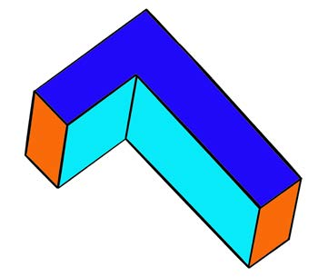
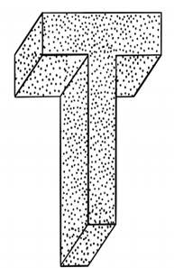
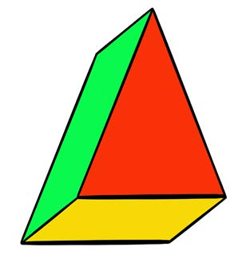
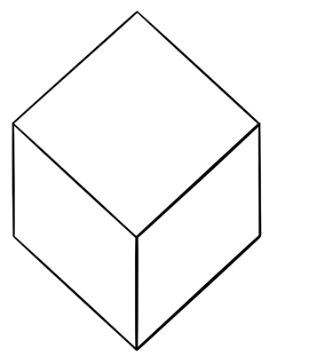

Kutia nakshi
Kutia nakshi ni namna ya kupendezesha kitu kwa kukiongezea vitu vingine ili kukifanya kivutie. Baadhi ya vitu vinavyotumika kutia nakshi ni nafaka, rangi, mchanga, majani na maua.
Chunguza picha za maumbo ya ukumbi, kisha jibu maswali yanayofuata:




Maswali
Jibu maswali yafuatayo kwa kuandika, kutumia kibodi au Breli.
Shughuli ya tano
Chunguza maumbo halisi au ya mguso yaliyotolewa na mwalimu, kisha chora, taja au eleza maumbo matatu ya ukumbi na nakshi zake kwa kutumia mchoro, maandishi, kibodi au Breli.